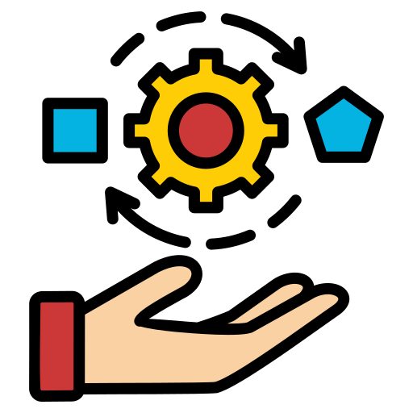
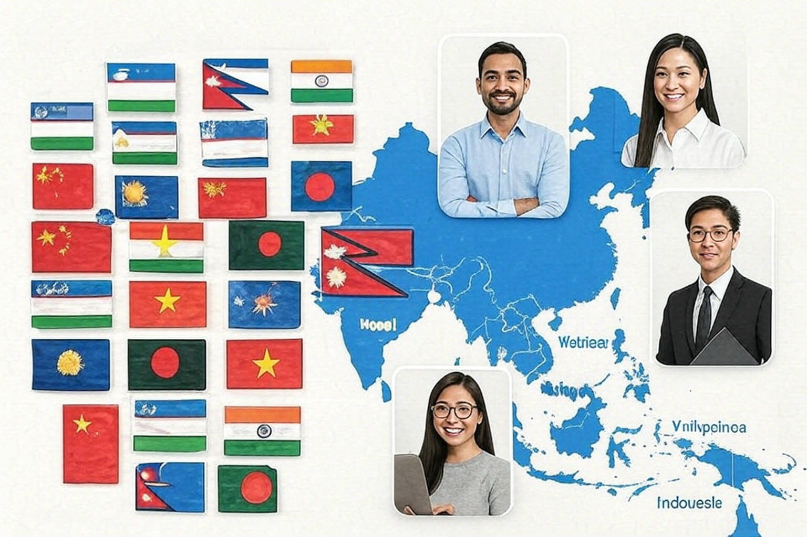

01 / 06
- 求める人財が見つからない？
外国人採用で未来を切り開く - 応募者が集まらない？
外国人財の力で解決します - 求人募集をしても優秀な人財が集まらない
初期選考をスムーズに - 外国人財の採用を検討しているがノウハウがない?
採用のお悩みをお聞かせください。
ITFが貴社に最適な人財をご提案し
将来にわたる採用活動を
サポートします。
ITFが貴社に最適な人財をご提案し
将来にわたる採用活動を
サポートします。
採用でお悩みですか？
ITFの外国人採用 人財派遣・紹介サービスで解決！
ITFの外国人採用 人財派遣・紹介サービスで解決！
外国人採用のメリット
-
-
優秀な人財が豊富
- 少子高齢化が進む日本では若手の優秀人財獲得が難しくなっています。応募の幅を広げることで優秀な人財と出会える可能性が高まります。株式会社ITFは、日本での介護・ホテル・外食向け外国人採用サービスに対応しています。
-
-
-
グローバル化への多言語対応
- 外国人のお客様の接客、母国言語による発信などで外国人の集客が計れる。株式会社アイティーエフは、日本全国での外国人採用サポートを提供します。
-
-
-

適応能力の高さ - 異国で生活し、仕事をする上で外国人は様々な状況に対応できる能力を持っています。教育から文化まで日本人とは異なるため、日本人が気付かなかった問題点を発見したり、新しい発想や考えを発見出来ます。特に介護向け外国人財紹介サービスに強みがあります。
-
-
-
多様な視点とアイデアの提供
- 外国人財は異なる文化やバックグラウンドを持っており、新しい視点やアイデアを企業に提供します。これにより、業務の革新や改善が促進されます。日本での介護サービスにも対応可能です。
-
-
-
高い専門知識と技術
- 特定の分野で高度な専門知識や技術を持つ外国人財を採用することで、企業の競争力が強化され、業界内での優位性を確保できます。介護や看護分野での外国人採用に特化しています。
-
-
-
グローバルネットワークの活用
- 外国人スタッフは自身の母国を含む広範なネットワークを持っており、そのネットワークを活用することで国際的なビジネスチャンスを拡大できます。株式会社アイティーエフは、日本全国で外国人介護人財の紹介を行います。
-
About Us
ITF(アイティーエフ)とは
『Illuminate The Future』ITF、外国人財の採用支援を通じて、日本で活躍する外国人をサポートする企業です。企業と外国人求職者の架け橋となり、双方のニーズに合った的確で信頼性の高いマッチングを提供しています。「一人でも多くの外国人、そして一社でも多くの企業の役に立ちたい」という想いのもと、ITFは外国人財紹介サービスのリーディングカンパニーを目指しています。
詳しく見るサービス紹介
ITFの外国人
外国人財ご紹介プランはこちら
ITF(株式会社アイティーエフ)では、全国で特定技能・技人国人財の紹介から登録支援まで、企業の採用における課題解決とサポートをワンストップでご提供しています。介護・ホテル・外食向け外国人採用サービスに特化しています。
-
01優秀な人財が豊富01優秀な人財が豊富国内外の外国人に多数ご登録頂いております。ベトナム人、インドネシア人、中国人をはじめとする多くの国籍の人財に加え、特定技能1号の対象人財も豊富です。ご要望に合わせご紹介させて頂けます。複数の送り出し機関や国外人財、また大学、専門学校、日本語学校(約10校)との提携を通じて、多くの人財の中からご要望に合った介護職外国人を日本全国でご紹介可能です。特定技能1号に必要な技能試験、日本語試験、介護日本語試験などの合格者をご紹介致します。特定活動中の優秀な人財もご紹介しています。
-
0202特定技能人財のご案内特定技能人財のご案内2019年4月に導入された「特定技能」は、新しい在留資格の一つで、外食業、介護、宿泊業などを含む12の業種で外国人財の採用が可能です。来日前に日本語能力と職種ごとの技能に関する試験に合格しているため、入社後すぐに現場で活躍できる即戦力として期待されています。 日本での介護人財採用にも対応しています。
-
03手厚いサポート03手厚いサポート採用が決定した人財のサポートも充実しております。現在・行政への手続き、生活に必要な手続きなど、定着率向上の為に、母国籍のスタッフが親身になっております。登録支援として、企業様のへも受入に関するサポートも行っております。様々な企業様からご依頼をいただいています。 日本全国での外国人介護人財のサポートが可能です。
-
04外国籍スタッフが多数在籍04外国籍スタッフが多数在籍多国籍スタッフによる安心サポート当社には、ベトナム人、インドネシア人、中国人、ネパール人など、様々な国籍のスタッフが多数在籍しています。これにより、求職者の皆様には、母国語でのサポートを提供することができ、ヒアリングや相談など、さまざまな場面で安心してご利用いただけます。各国の文化や背景を理解しているスタッフが対応するため、よりスムーズで心温まるサポートをお届けできます。 日本での介護サービスにも対応しています。
解決策
企業の採用活動における、こんな課題を解決します
-

POINT 1アジア6か国の提携機関から多彩な人財を紹介ITFは、主に東南アジアを中心に、6か国の現地提携機関と連携し、日本での就労を希望する若者たちの採用と育成に尽力しています。企業様のニーズに合わせて、多様なスキルを持つ人財を迅速にご紹介することが可能です。日本での介護・ホテル・外食向け外国人採用サービスにも対応しています。 -
POINT 2母国語対応スタッフによる選抜・推薦で、ニーズに合った人財をご紹介し、高い定着率を実現します。母国語対応の自社スタッフが、現地の採用候補者に企業様の経営理念、ビジョン、運営方針などを丁寧に説明し、理解を深めてもらいます。これにより、入社後のミスマッチを未然に防ぎ、よりスムーズな就業開始を実現します。日本全国での外国人介護人財のサポートが可能です。
-
POINT 3幅広い業種にわたる雇用機会を提供しています。ITFでは、介護業、飲食料品製造業、外食業、宿泊業、ビルクリーニング業、素形材産業、産業機械製造業、電気・電子情報関連産業、建設業、造船・舶用工業、自動車整備業、航空業、農業、漁業など、14の業種にわたる採用が可能で、皆様のご希望に最適な結果をもって簡単に検索いただけます。日本での介護サービスに特化しています。
📄 履歴書作成サービスを今すぐ試してみませんか？
完全無料・登録だけで今日から使えます。日本での就職活動を、ITFが全力でサポートします。
お知らせ
"ITFからの最新ニュースやお知らせをこちらに掲載します。”
外国人財の採用をご検討中の方は、お気軽にご相談ください
CONTACT
ご不明な点はお気軽に
お問い合わせください